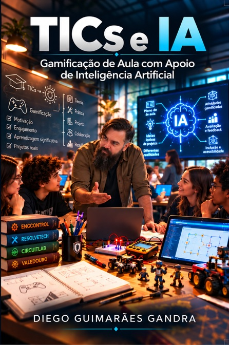

EDUCAÇÃO & TECNOLOGIA
TICs e IA
Gamificação de Aula com Apoio de Inteligência Artificial
E se o professor pudesse transformar uma necessidade percebida em sala de aula em uma experiência interativa criada para seus próprios alunos?
TICs e IA parte dessa pergunta para discutir tecnologia, gamificação e Inteligência Artificial a partir da prática docente. O livro percorre conceitos fundamentais, aproxima-os da realidade da sala de aula e mostra como a IA pode participar do processo de criação sem substituir aquilo que continua essencial: a experiência, a intenção pedagógica e o conhecimento do professor.
Ao longo desse percurso, projetos como ResolveTech, CircuitLab e EngControl deixam de ser apenas exemplos e tornam-se estudos de caso de um processo real: identificar uma necessidade, transformar conteúdo em desafio, desenvolver, testar, errar, corrigir e levar o resultado para os alunos.
Mais do que ensinar a “fazer um jogo”, a obra propõe uma forma de pensar: começar pela aula, usar a tecnologia como ferramenta e fazer da gamificação uma ponte entre o conteúdo e o aluno.
POR TRÁS DA OBRA
Da sala de aula para o livro.
Este livro não começou com a intenção de escrever um livro. Começou em sala de aula, diante de uma questão bastante comum a quem ensina: como fazer com que determinados conteúdos deixem de ser apenas apresentados e passem a ser experimentados pelo aluno?
A resposta foi sendo construída aos poucos. Primeiro vieram pequenas experiências, adaptações de atividades e o uso de recursos digitais. Depois, a gamificação passou a ocupar um espaço maior: não como simples distribuição de pontos, medalhas ou recompensas, mas como uma maneira de criar situações em que o aluno precisasse observar, decidir, testar, errar, corrigir e tentar novamente.
Foi nesse contexto que surgiram projetos como ResolveTech, CircuitLab e EngControl. Cada um nasceu de uma necessidade pedagógica diferente e trouxe seus próprios desafios. Ao desenvolvê-los, ficou evidente que criar uma experiência educacional interativa envolve muito mais do que programação: é preciso conhecer o conteúdo, pensar como o aluno irá interagir com ele, prever erros, estabelecer critérios de validação e, principalmente, compreender o que se deseja ensinar.
A Inteligência Artificial entrou nesse processo como parceira de desenvolvimento. A conversa com a IA ajudou a transformar ideias em protótipos, revisar códigos, experimentar soluções, produzir elementos visuais e acelerar etapas que, até pouco tempo atrás, exigiriam conhecimentos técnicos ou recursos nem sempre disponíveis a um professor.
Mas também houve erros. Houve respostas inadequadas, códigos que não funcionaram como esperado, interfaces que precisaram ser refeitas e decisões que pareciam boas na tela, mas não funcionavam quando confrontadas com a realidade da aula. E talvez esteja justamente aí uma das partes mais importantes dessa experiência: usar IA não elimina a necessidade de saber o que se está fazendo. Ao contrário, torna ainda mais importante saber avaliar, questionar e decidir.
O livro nasceu quando esse percurso deixou de ser apenas uma coleção de projetos e passou a revelar algo que poderia ser compartilhado com outros professores. Não como uma receita pronta, nem como um manual para transformar toda aula em jogo, mas como o registro de uma possibilidade: professores podem utilizar as tecnologias que hoje estão ao seu alcance para criar recursos que façam sentido para seus conteúdos, suas turmas e sua própria maneira de ensinar.
Mais do que falar sobre tecnologia, a obra mostra tecnologia sendo usada para ensinar — com o professor permanecendo no lugar em que sempre deveria estar: no centro das decisões pedagógicas.
CONTEÚDO DIGITAL
Além das páginas.
Imagens e materiais digitais associados à obra serão reunidos neste espaço.